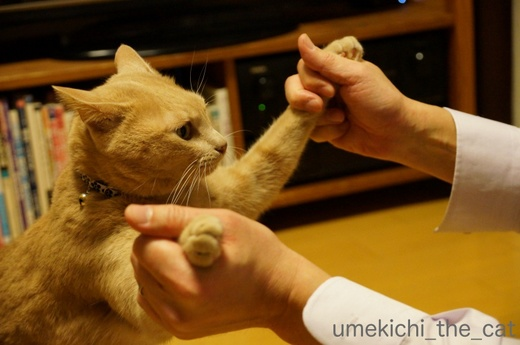
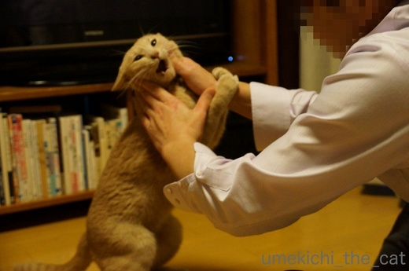
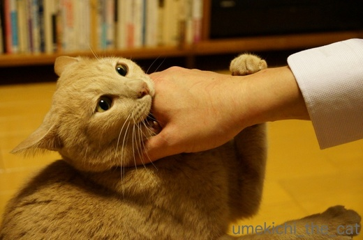
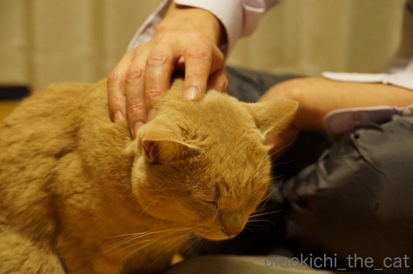
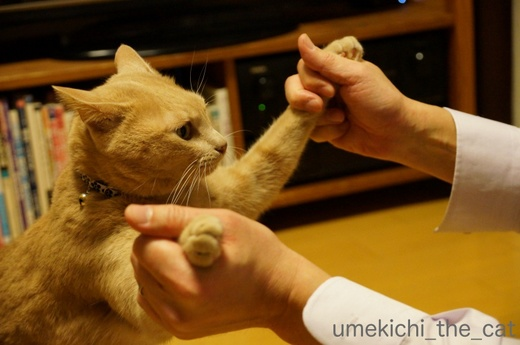
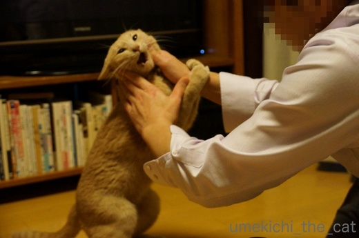
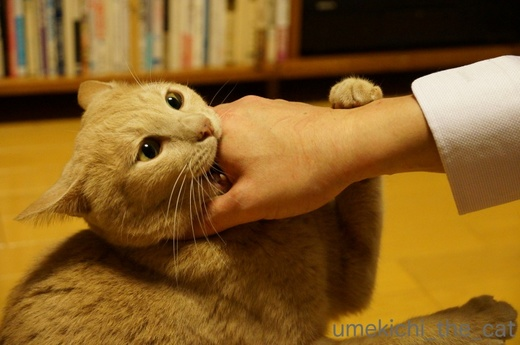
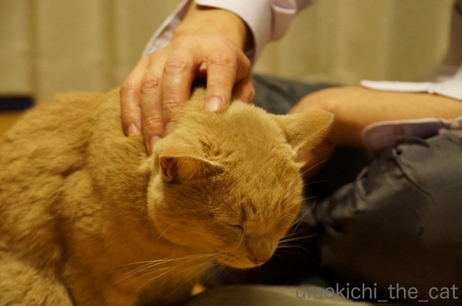

肉球の日のダンス [梅吉]
梅吉さん踊りましょう！


まずはー、安定した下半身からのーゆったりした動きでーー

開脚！

ダンスはパッションですからね！顔の表情も大切です。

カメラのフレームからはみ出すほどの大きな表情！良いですよーー！！

手の赤い線がダンスのアクセントになっていますねＯ(≧▽≦)Ｏ

フィニッシュは肉球を振り上げて決めのポーズ！！

ダンスの終わりにはお互いに礼。
梅吉さんお疲れ様でしたー。
今日は２月９日、肉球の日ですねー＾＾
 ↑ガブッと一押し↑
↑ガブッと一押し↑
先日梅吉初めての雪と記事にしましたが
梅吉雪は初めてじゃないんですって！
スキーも滑れるらしい・・・いつの間に？
雪山親睦会の一コマみたいです＾＾
はしゃぎすぎて埋まっちゃってる子がいますね・・・(^▽^;)
この後みんなで宴会もあるみたいですよー。楽しみ♪
･゜ﾟ･*:.｡..｡.:*･゜ﾟ･*:.｡. .｡.:*ネタバレ･゜ﾟ･*･゜ﾟ･*:.｡..｡.:*･゜ﾟ･*:.｡..｡.:*
写真は札幌に住んでいた時に行ったルスツ高原スキー場です。
映っているのは私なんですよ＾＾
後ろに見えているのは羊蹄山＝蝦夷富士。
良いお天気だったけどめちゃくちゃ寒かった記憶が・・・


まずはー、安定した下半身からのーゆったりした動きでーー

開脚！

ダンスはパッションですからね！顔の表情も大切です。

カメラのフレームからはみ出すほどの大きな表情！良いですよーー！！

手の赤い線がダンスのアクセントになっていますねＯ(≧▽≦)Ｏ

フィニッシュは肉球を振り上げて決めのポーズ！！

ダンスの終わりにはお互いに礼。
梅吉さんお疲れ様でしたー。
今日は２月９日、肉球の日ですねー＾＾
先日梅吉初めての雪と記事にしましたが
梅吉雪は初めてじゃないんですって！
スキーも滑れるらしい・・・いつの間に？
雪山親睦会の一コマみたいです＾＾
はしゃぎすぎて埋まっちゃってる子がいますね・・・(^▽^;)
この後みんなで宴会もあるみたいですよー。楽しみ♪
･゜ﾟ･*:.｡..｡.:*･゜ﾟ･*:.｡. .｡.:*ネタバレ･゜ﾟ･*･゜ﾟ･*:.｡..｡.:*･゜ﾟ･*:.｡..｡.:*
写真は札幌に住んでいた時に行ったルスツ高原スキー場です。
映っているのは私なんですよ＾＾
後ろに見えているのは羊蹄山＝蝦夷富士。
良いお天気だったけどめちゃくちゃ寒かった記憶が・・・

カフェオレ色の梅吉

梅吉 2023年8月10日 永眠


梅吉と出会った譲渡会

犬猫の理由なき殺処分ゼロ
妄想広告
UMEKICHI 光

爆発的に早い！
時々攻撃的！
Thanks to Mr.Boss365
爆発的に早い！
時々攻撃的！
Thanks to Mr.Boss365

ダンスの後は一礼 梅吉様さすがです。体を動かすだけでなく精神も鍛錬されているのですね<m(__)m>ははー！
それにしても手の傷の痛々しいこと(>_<)
by palpal (2018-02-09 16:11)
イカ耳ダンスが最高です！(笑)
どんな声を出して踊ってるのかを想像しても楽しいわｗｗ
開脚したときのお腹、すかさずぷるぷるっとふるわせて
踊りのアクセントにしたくなりました！
梅吉君、蝦夷富士をバックに決まってますね！
頭から突っ込んでる子は誰だろう・・・見事なダイブ！！！ｗｗ
by リュカ (2018-02-09 16:29)
おててをカプカプはご愛敬ですね(#^.^#)
素晴らしい表現力です♪
by きぃ (2018-02-09 16:49)
赤い線に親しみを感じます。
今日は肉球の日なんですね。知りませんでした。
真っ赤な手袋と雪に突っ込んだ梅吉さんが可愛いです(^^)
by riverwalk (2018-02-09 19:29)
梅吉さんされるがままですね！
やめてーって越が聞こえてきそう(^^)
by ma2ma2 (2018-02-09 20:23)
梅吉さん、肉球の日のダンス楽しんでました？（笑）
カプカプと手の傷、陰でご苦労さまでした。
スキーウエアー姿が登場とは衝撃的でした。
あまりにピッタリで素敵です。
梅吉さんに赤い手袋がよく似合っています。
by kiki (2018-02-09 20:31)
優雅で激しダンス、ぜひ動画でお願いします！
相方さんの悲鳴がBGMになりそうですけど(^▽^;)
赤い線だらけの手、お風呂でしみるだろうな・・・。
2月9日肉球の日。
わたしもこてつの肉球をニギニギして、猫パンチをくらったところです。
ルスツはニセコより近くてお天気がいいし、若い頃毎シーズン通ってました！
by ゆきち (2018-02-09 20:39)
可愛いダンスですね~。お口開けてるのが歌ってるように見えます。雪山にリンクをどうも。sanaさんのお嬢様方も来てくれるようなので、宴会はみんなが揃ってからにしましょう。
by zombiekong (2018-02-09 21:13)
梅吉っつぁん、今日も良い仕事してますね。
by 猫爺 (2018-02-09 21:31)
手の赤いアクセント、いいですね～。
（いや、良くない。^^;）
梅吉さんは手加減、噛み加減してくれる方でしょうか？
by yes_hama (2018-02-09 22:46)
う、梅吉くんの表情が・・・^^;
個人的には、３枚目のしりもちショットが萌えツボ入りました。
・・・あっ！しりもちじゃないんだよね！開脚だよね！（*´∀｀*）
by Ja-Kou66 (2018-02-10 01:21)
肉球の日とは知りませんでした＾＾；
by ぽちの輔 (2018-02-10 06:48)
優雅なワルツからシメはラテン！パッションを感じるガブダンスだす♪
by Ginger (2018-02-10 12:06)
あはは。梅吉くんのダンスも可愛い♪
家も猫たちはみんな踊らされます。わんこは体重があるのでねｗ
家は手を取り合って一緒にダンスというより後ろからわきの下を持って
２足歩行で一人で踊っているように見せます。
一緒のダンスも楽しそう！今度踊ろうっと(≧▽≦)
雪山の梅吉くん。精悍でイケメン！！
ちぃさんの体だったのね。かっこいいな～。
by emi (2018-02-10 14:13)
梅吉さん、お父さんとダンスの練習をしてるんですねぇ( ^ω^ )
もしかしてそれはお母さんとのダンスを完璧に踊るための練習ですか♪( ´▽｀)
最後の写真の「やりきった感」満載さが良いですねぇ=(^.^)=
北海道、昔は毎年のようにニセコに滑りに行ってました＾＾
北海道の雪は気持ち良いですよねぇ*\(^o^)/*
by ニッキー (2018-02-10 22:36)
ダンス上手(笑)
でも耳が寝てるのでかなり迷惑顔な気もしないではないけど。
by 響 (2018-02-11 10:00)
うーむ、なかなかぎこちなくも楽しいダンス(^_^;)
流血もなんのそのですなー。
by よーちゃん (2018-02-11 12:46)
手を掴まれて～カプカプしてもダンス？
尻もちついてもダンス？ あんよが可愛い～＾＾
あっ、開脚でしたね☆
ダンスとは、一種の格闘技と見た！＾m＾
by sana (2018-02-11 23:09)
ダンシング梅吉さん、クールでカッコイイですね＾＾
また、世界一 礼儀正しい猫さんだ～♪
ぜひお相手をお願いします( ´艸｀)
あかりはスノボ出来るけど、スキーはしたことないんだそうです。
梅吉コーチのスキー合宿に参加したいそうです( ´∀｀ )
by マーヤ (2018-02-12 09:14)
あらーー、梅吉さんったら、なんて華麗なダンシング♪
ちょぴり暴れて見えるのは、きっと気のせいよね(^.^)
大きな動きで、表現豊か。10点満点でっす！！！
ルスツの梅吉さん。違和感ない(^▽^;) カッコいいｗ
以前、北海道のスキー場に行ったら、
野生のキツネさんとイノシシさんがコンニチハしてくれました。
そういう、ふれ合い？があるのも、北海道の魅力ですよね(^-^)
by morichan (2018-02-13 10:37)
palpalさん＞
梅吉、どこを目指しているのかわかりませんが鍛錬は怠りないようです＾＾
手の傷はもう慣れっこでーす（私もね）w
リュカさん＞
ダンスの時は気合の入った良い声を出すんですよー。
ラテンの「ウーッ！マンボッ！！」みたいな感じ？(≧ω≦｡)
お腹ぷるぷるも良いねー＾＾
今度はサンバのお姉さんみたいな。
梅吉には「松吉」くんというお友達がいるそうな・・・www
きぃさん＞
カプカプは「LOVE」の表現だそうです＾＾
我が家ではラブ♡ガブと呼んでまーす！
riverwalkさん＞
赤い線を身を以てご存知なのですね＾＾仲間仲間！
スキーは転び方からというので
梅吉（分身）も雪へ突っ込んで転ぶ練習をしているようですよー。
ma2ma2さん＞
いえいえ、梅吉が積極的に誘ってくるのですよー＾＾
ダンス大好きみたいです(^▽^;)
kikiさん＞
梅吉にこんなにスキースタイルが似合うと思ってませんでした＾＾
本当に滑らせても上手そうなんですけど。
ボードが向いてる様な気がしますよ！
ゆきちさん＞
（がぶがぶ）ダンス動画良いですね！
ダンス時の梅吉の気合のかけ声も一緒にお届けできるし＾＾
おっとは慣れているので弱音は吐きませんwww
ルスツに通われていたのですね！
札幌市内に留まって送迎バスにて移動のパターンでしょうか。
ならば中山峠のあげいもをご存知かと＾＾
「私をスキーに連れてって」の雰囲気のゲレンデは古き良き時代の思い出で
今、札幌近郊のスキー場は中国人であふれている様ですよ・・・
zombiekongさん＞
お口を開けて魂のシャウト！という感じでしょうか＾＾
お嬢さんたちも参加いただける宴会、賑やかになりそうですねー。
猫爺さん＞
はい＾＾きっちりやってくれましたー。
ダンスは得意なんですよヾ(*ΦωΦ)ﾉ
yes_hamaさん＞
赤い線は勲章ですから多ければ多いほどエライのです（本当か？） (^▽^;)
線はたくさんつきますが本にゃんなりに加減はしている様です。
アグレッシブな楽しい遊びとちゃんと理解している様ですよー＾＾
Ja-Kou66さん＞
良い顔しているでしょー＾＾
楽しそうで鼻息もすごいんですよ！フンガーってw
3枚目はぜひ開脚でお願いいたしますm(_ _)m
ぽちの輔さん＞
毎月あるといえばあるのですが・・・＾＾；
二月は特別扱いでお願いします(^_－)☆
by ちぃ (2018-02-14 15:34)
Gingerさん＞
さすがお目が高いです！梅吉のダンスはラテンダンス。
気合の声もなかなかなんですよー＾＾
emiさん＞
後ろから支えるダンスね＾＾
それは楽しそうだし赤い線がつかなくて良いかもー。
やってみなくちゃ。
雪山の梅吉、なかなかでしょうＯ(≧▽≦)Ｏ
スキーウェアを脱いだら残念な人だった・・・
とならない様にがんばってもらわなきゃwww
ニッキーさん＞
それが私とはあまり踊ってくれないのですよ・・・
このダンスは士気を高めるオールブラックスの「ハカ」みたいな
ものなのでしょうか・・・
男同士のコミュニケーションでもあるのかもしれませんね！
でも私は観客として楽しませてもらってまーす＾＾
ニッキーさんも北海道スキーを？
私はアンヌプリをホームゲレンデにしてました。
ニセコは今やリトル中国のようですよ・・・
響さん＞
ダンスは梅吉の方から誘ってくるんですよー＾＾
お耳が寝ているのは攻撃に備えるため？
なんの攻撃だろう・・・
よーちゃん＞
ぎこちない動きが梅吉流・・・なんて＾＾
体はやわらかいんですけどねー。
流血は毎度のことなので気にしてませんwww
sanaさん＞
ああ、sanaさん確信をついていらっしゃる・・・・
そう！！梅吉ダンスは戦いの踊り！！
アグレッシブな男の世界の様です＾＾
マーヤさん＞
あかりちゃん合宿に参加いただけるのですね＾＾
宴会中心の合宿になりそうなんですけど練習頑張りましょう！！
荒天でゲレンデが使えなかったらダンス合宿に変更w
morichanさん＞
暴れて見えるのは溢れ出るパッションのせいでしょう＾＾
満点評価ありがとうございますー。
ええっΣ(ﾟ◇ﾟ；)イノシシをみたのですか！
それは北海道人の私もない経験です。
キツネとノウサギはよく見るんですけどねー。
雪山ではありませんが秋口山登りをしていたら
「クマがいるので下山！」と山岳ガイドの方に言われたことが・・・
その時はシャレにならずに怖かったです (^▽^;)
by ちぃ (2018-02-14 16:14)